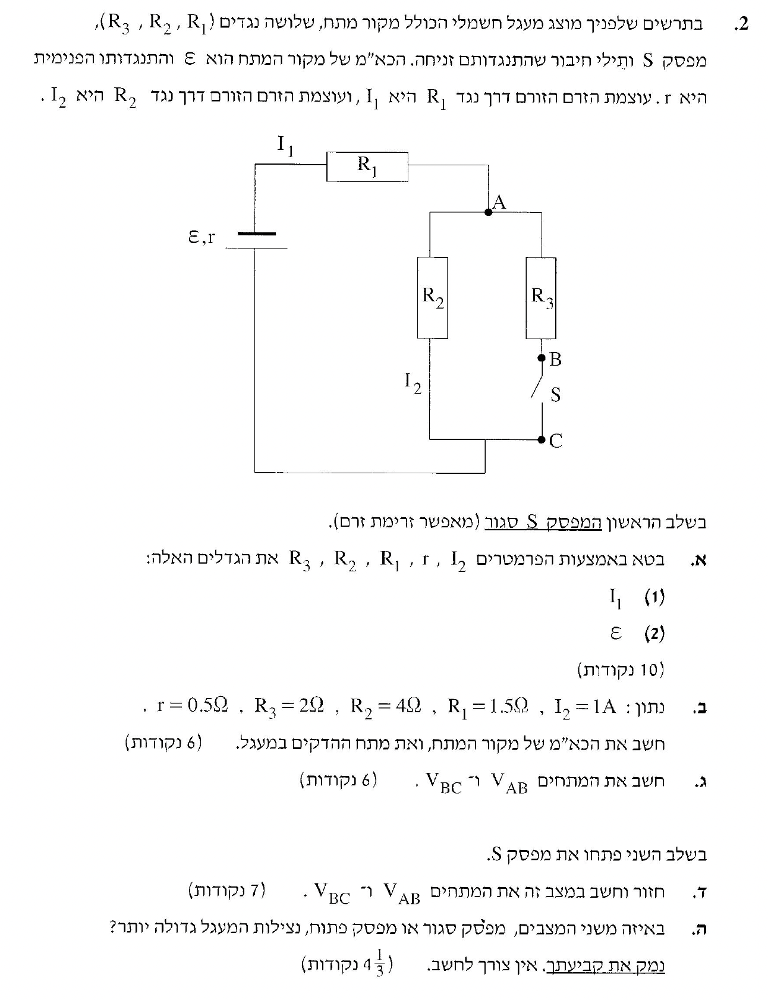
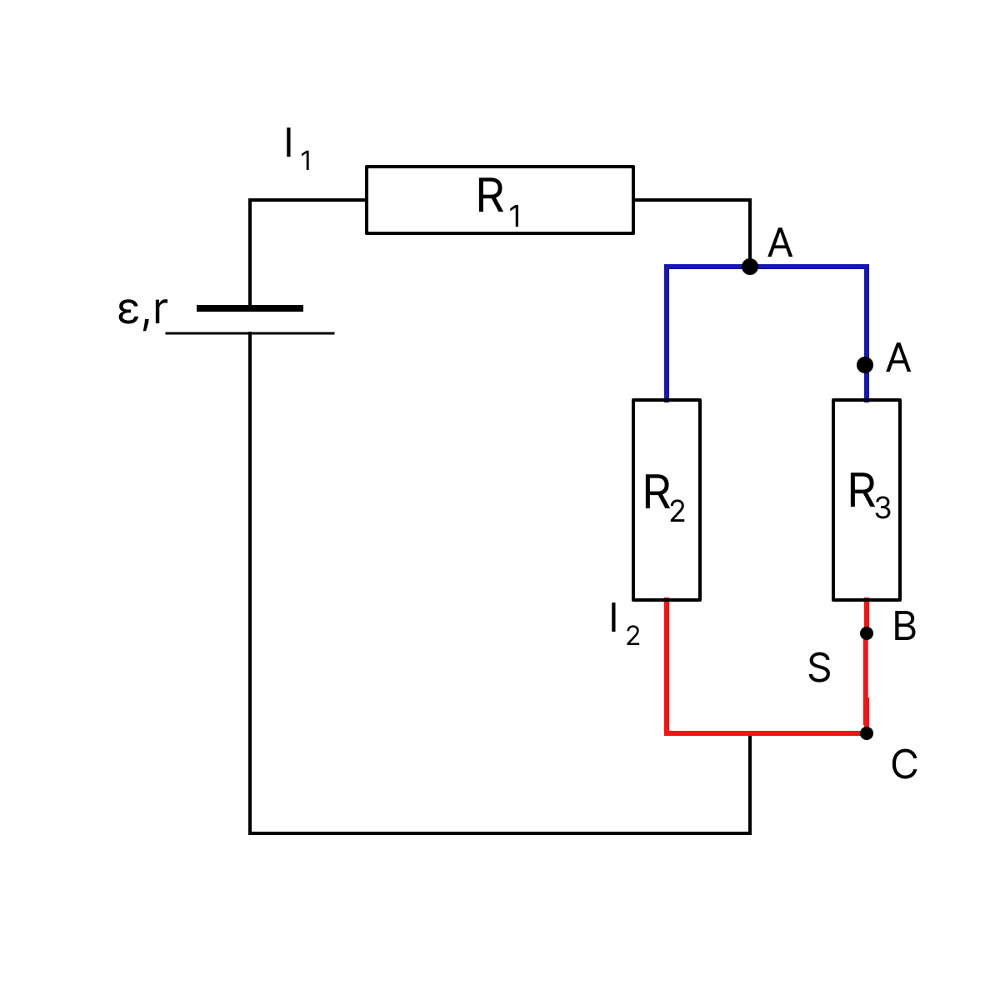
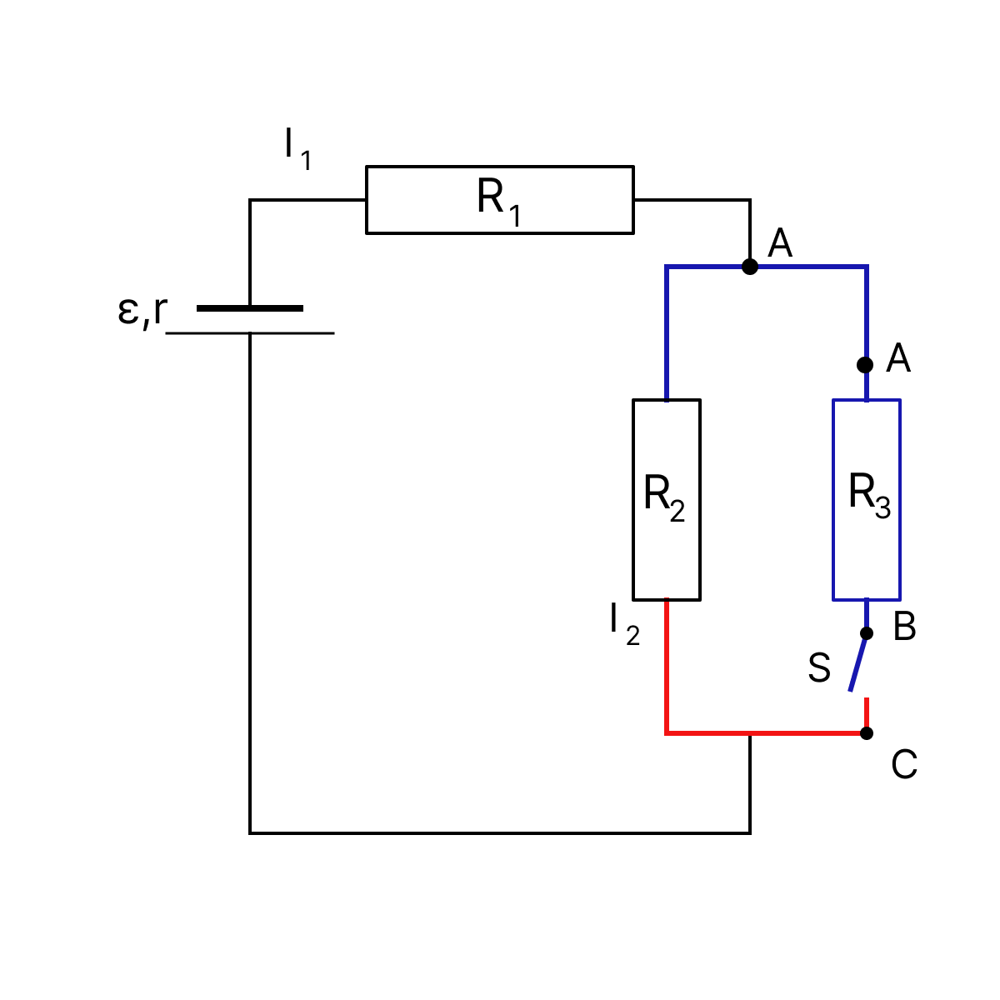

פתרון מודרך, מוסבר וצעד-אחר-צעד לפיזיקה 5 יח"ל

כאשר המפסק \(S\) סגור, הנגדים \(R_2\) ו-\(R_3\) מחוברים במקביל. תכונה של חיבור במקביל היא שהמתח על כל אחד מהענפים זהה, לכן לפי חוק אוהם נקבל:
נחלץ את הזרם \(I_3\) הזורם דרך הנגד \(R_3\):
כאשר הזרם הראשי מגיע לנקודת הפיצול (לפני הנגדים המקבילים), הוא מתחלק לשני הענפים. לכן הזרם הראשי שווה לסכום הזרמים: \(I_1 = I_2 + I_3\). נציב את הביטוי שמצאנו עבור \(I_3\):
תחילה, נחשב את ההתנגדות החיצונית השקולה של כל המעגל. נמצא את ההתנגדות של החלק המקבילי (נסמן כ-\(R_{23}\)):
ההתנגדות החיצונית הכוללת (\(R_{ext}\)) מורכבת מ-\(R_1\) המחובר בטור לחיבור המקבילי, ולכן פשוט נחבר אותן:
כדי למצוא את הכא"מ, נשווה בין שני ביטויים המתארים את מתח ההדקים במעגל. מצד אחד, מתח ההדקים הוא המתח הנופל על כל ההתנגדות החיצונית: \(V_{ab} = I_1 \cdot R_{ext}\). מצד שני, נוסחת מתח ההדקים של הסוללה היא \(V_{ab} = \varepsilon - I_1 \cdot r\). נשווה ביניהם:
נעביר את האיבר של ההתנגדות הפנימית לאגף השני ונוציא גורם משותף כדי לחלץ את הכא"מ \(\varepsilon\):
כל שנותר הוא להציב פנימה את הביטויים שמצאנו עבור הזרם הראשי וההתנגדות החיצונית:
ראשית, נחשב את הזרם הראשי במעגל \(I_1\) בעזרת הנוסחה שמצאנו בסעיף א':
כעת, נחשב את ההתנגדות החיצונית השקולה במעגל:
כפי שפיתחנו בסעיף הקודם מתוך השוואת ביטויי מתח ההדקים, נוכל למצוא את הכא"מ (\(\varepsilon\)):
בשלב האחרון, נחשב את מתח ההדקים. זהו המתח שהסוללה מספקת נטו למעגל החיצוני, לאחר "תשלום המס" של ההתנגדות הפנימית שלה:

שימו לב: הצבעים האחידים במעגל מייצגים משטחי שווי פוטנציאל. לכן בין כל שתי נקודות שנמצאות על אותו צבע, הפרש הפוטנציאלים הוא 0 V.
נקודות A ו-B עוטפות בדיוק את הנגד \(R_3\). לכן, המתח \(V_{AB}\) הוא בעצם המתח על הנגד \(R_3\). כדי לחשב אותו, אנו זקוקים לזרם הזורם דרכו, \(I_3\).
הזרם הראשי מתפצל לשני הענפים, ולכן סכום הזרמים בענפים שווה לזרם הראשי: \(I_1 = I_2 + I_3\). נציב את הערכים שמצאנו:
כעת נחשב את המתח על הנגד בעזרת חוק אוהם:
נקודות B ו-C עוטפות את המפסק הסגור \(S\). מכיוון שזהו מעגל אידיאלי (לא נתון אחרת), למפסק סגור אין התנגדות (\(R_S = 0 \Omega\)). הזרם \(I_3\) ממשיך לזרום דרך המפסק, ולכן המתח עליו יהיה (לפי חוק אוהם):

גם בתרשים הזה הצבעים האחידים מסמנים משטחי שווי פוטנציאל. כלומר, בין כל שתי נקודות שעל אותו צבע המתח הוא 0 V.
מכיוון שהמפסק פתוח, אין מסלול סגור לזרם בענף הימני. לכן הזרם דרך הנגד \(R_3\) הוא אפס: \(I'_3 = 0\).
נשתמש בחוק אוהם כדי למצוא את המתח על הנגד, שהוא למעשה המתח בין נקודה A ל-B:
נקודות B ו-C נמצאות משני צידי המפסק הפתוח. נחשוב על הפוטנציאלים בנקודות אלו:
מכיוון שאין זרם דרך \(R_3\), הרי שאין עליו מפל מתח (כפי שראינו, \(V_{AB}=0\)). לכן, הפוטנציאל בנקודה A שווה בדיוק לפוטנציאל בנקודה B: \(V_A = V_B\).
מכאן נובע שהמתח בין B ל-C (\(V_{BC}\)) שווה למתח בין A ל-C (\(V_{AC}\)).
אבל מהו המתח בין A ל-C? זהו בדיוק המתח על הענף המקביל הפעיל היחיד שנותר - הנגד \(R_2\). לכן, נסיק כי \(V_{BC} = V_{R2}\).
כדי למצוא את המתח על \(R_2\), עלינו לחשב את הזרם החדש במעגל. המעגל כעת הפך להיות מעגל טורי פשוט הכולל את מקור המתח, הנגד \(R_1\) והנגד \(R_2\) בלבד. נחשב את ההתנגדות החיצונית החדשה:
נשתמש בקשר של מתח ההדקים שפיתחנו קודם (\( \varepsilon = I' \cdot (R'_{ext} + r) \)) כדי לחלץ את הזרם החדש \(I'\):
הזרם \(I'\) עובר במלואו דרך הנגד \(R_2\). לכן, המתח על \(R_2\), שהוא כאמור שווה גם למתח המבוקש \(V_{BC}\), יחושב לפי חוק אוהם:
נצילות של מעגל חשמלי (המסומנת באות היוונית \(\eta\)) מוגדרת כיחס שבין ההספק המנוצל במעגל החיצוני לבין ההספק הכולל המופק על ידי מקור המתח. ניתן לפתח נוסחה זו לביטוי שתלוי במתח ההדקים והכא"מ:
מכיוון שמתח ההדקים הוא \(V_{ab} = \varepsilon - I_{total} \cdot r\), ניתן לראות בבירור שככל שהזרם הראשי במעגל (\(I_{total}\)) קטן יותר, המכפלה \(I \cdot r\) (המייצגת את המתח ש"הולך לאיבוד" בהתנגדות הפנימית של הסוללה) קטנה גם היא. כתוצאה מכך, מתח ההדקים \(V_{ab}\) גדול יותר, ולכן הנצילות גבוהה יותר.
בואו נשווה את ההתנגדויות בשני המצבים:
כאשר ההתנגדות החיצונית הכוללת גדולה יותר (במצב פתוח), הזרם הראשי במעגל קטן יותר. כאמור, כאשר הזרם קטן, מפל המתח הפנימי של הסוללה קטן. כתוצאה מכך, יותר מתח "מצליח לצאת" החוצה אל המעגל החיצוני, כלומר מתח ההדקים גדל.
מכיוון שהנצילות נמצאת ביחס ישר למתח ההדקים (\(\eta = \frac{V_{ab}}{\varepsilon}\)), עלייה במתח ההדקים (כאשר הכא"מ קבוע) משמעותה נצילות גבוהה יותר.